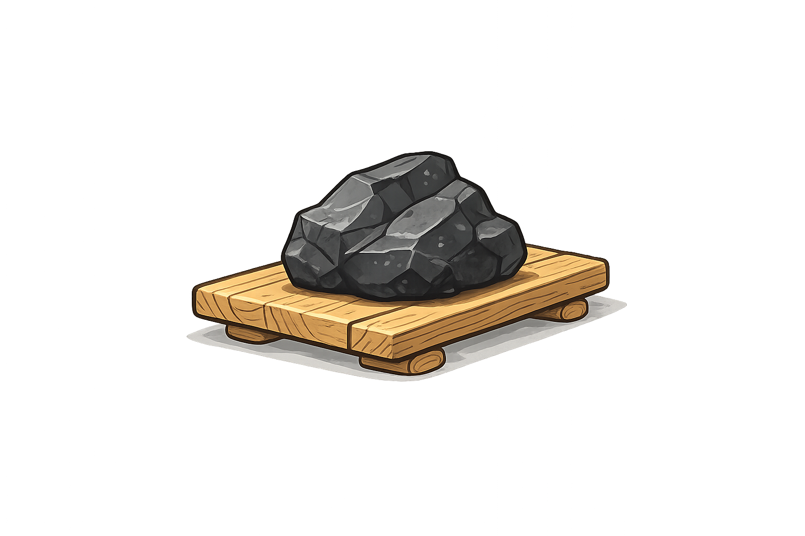
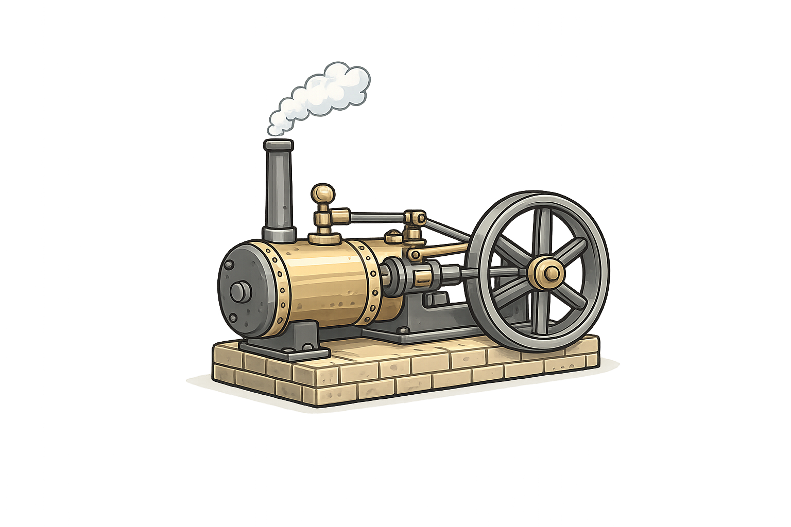
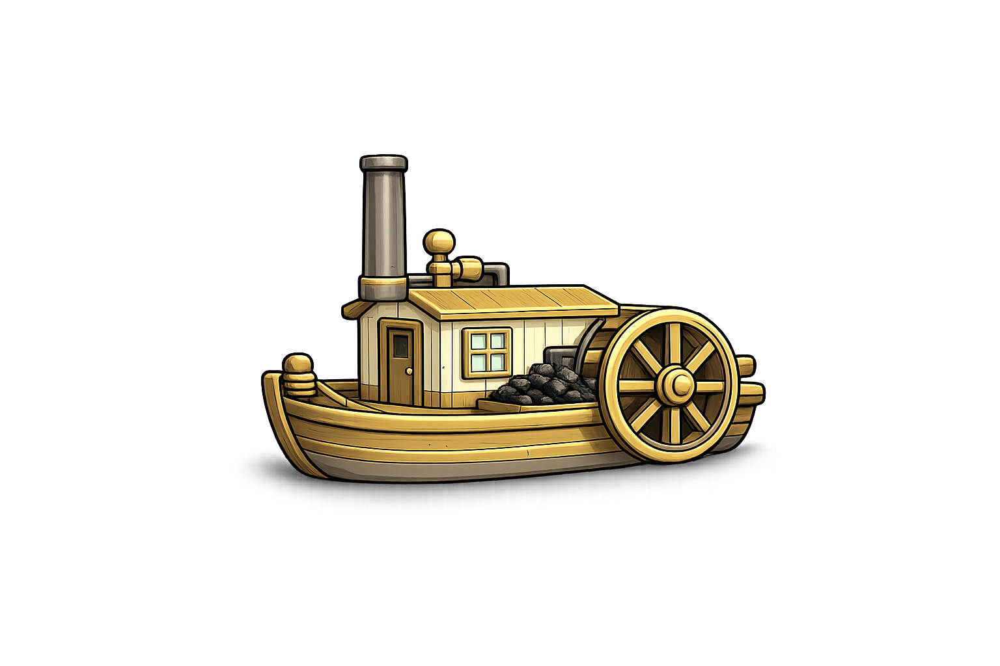
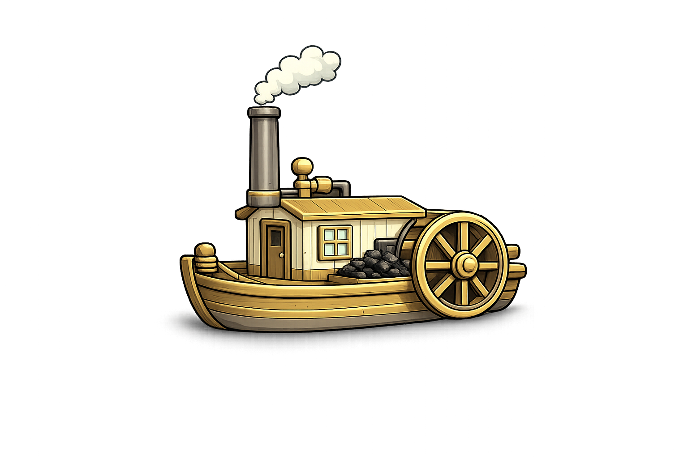

source("R/workshop-model.R")3 Your first energy model
We start with the smallest model that can exist — so small it does not work — and grow it one object at a time until it burns coal and emits CO2. Every step is a few lines of R, and every step you can solve and look at.
To keep the arithmetic in your head, the whole chapter uses:
- one region,
R1 - one year, 2025
- one time slice,
ANNUAL— no seasons, no hours
Time slices and multiple years arrive in a later session; here nothing competes for attention with the energy balance itself.
Naming. Throughout the workshop, an object’s prefix says what kind of thing it is: repo_* for repositories, mod_* for models, scen_* for solved scenarios. Commodities and processes keep their bare set names (ELC, SUP_COA, ECOA), because those strings are what the model itself uses.
3.1 Hello world: a demand and nothing else
An energy system model is, at heart, a balance: everything consumed must come from somewhere. So let us declare only the consumption — electricity, and a demand for 50 PJ of it a year — and see what happens.
ELC <- newCommodity(
name = "ELC",
desc = "Electricity",
unit = "PJ",
timeframe = "ANNUAL"
)
DEM_ELC <- newDemand(
name = "DEM_ELC",
desc = "Electricity demand",
commodity = "ELC",
unit = "PJ",
demand = data.frame(demand = 50) # 50 PJ a year
)
repo_EMPTY <- newRepository("repo_EMPTY", ELC, DEM_ELC)
mod_EMPTY <- newModel(
name = "HELLO",
desc = "A demand and nothing to serve it",
data = repo_EMPTY,
region = "R1",
horizon = newHorizon(period = 2025, intervals = 1)
)Now build the scenario. energyRt assembles it, but warns you first:
scen_EMPTY <- interpolate_model(mod_EMPTY, name = "EMPTY")Warning: There is no supply, production, interregional trade, or import for
demand-commodities in regions:
comm region
1 ELC R1
The model will be infeasible unless these commodities are supplied.It is a warning, not an error: the scenario is built, and you can send it to the solver and see for yourself. There is no solution to read back, so tell solve_scenario() not to look for one:
solve_scenario(scen_EMPTY, read.solution = FALSE)The solver’s own verdict is the last line of its log:
GLPK Simplex Optimizer 5.0
7 rows, 5 columns, 10 non-zeros
Preprocessing...
PROBLEM HAS NO PRIMAL FEASIBLE SOLUTIONThis is the first lesson, and it is worth more than it looks. The model is not wrong, it is infeasible: no combination of decisions satisfies the constraints, because one constraint says “deliver 50 PJ of ELC in R1” and nothing in the model can produce a single joule. Note how small it is — 7 rows and 5 columns. Everything you write in energyRt ends up as a matrix like this one, just larger.
Note
Infeasibility is a normal result, not a crash. As models grow, most of the problems you meet will be infeasibilities — a demand nothing can serve, a capacity bound that is too tight, a policy constraint that contradicts another. The skill is reading them.
energyRt warns rather than refusing to build, so you can always inspect an incomplete model and hand it to the solver. If you would rather it stop at the first such finding, set options(en.model_checks_stop = TRUE).
3.2 Technically speaking, it is a model
The cheapest fix is to buy the electricity from somewhere else. newImport() brings a commodity in from outside the model — the rest of the world — at a price:
IMP_ELC <- newImport(
name = "IMP_ELC",
desc = "Electricity import from the rest of the world",
commodity = "ELC",
unit = "PJ",
import = data.frame(price = 30) # MEUR/PJ
)
draw(IMP_ELC)Add it to the model and solve:
repo_IMPORT <- newRepository("repo_IMPORT", ELC, DEM_ELC, IMP_ELC)
mod_IMPORT <- newModel(
name = "HELLO",
desc = "Demand served by imported electricity",
data = repo_IMPORT,
region = "R1",
horizon = newHorizon(period = 2025, intervals = 1)
)
scen_IMPORT <- interpolate_model(mod_IMPORT, name = "IMPORT") |>
solve_scenario()
getData(scen_IMPORT, "vObjective", merge = TRUE) # total cost, MEUR
getData(scen_IMPORT, "vImportRow", merge = TRUE) # imported ELC, PJThat is a working energy system model. It imports 50 PJ and pays 50 × 30 = 1500 MEUR. Trivial arithmetic — which is the point: you can check the optimizer by hand, so you know the machinery is doing what you think.
Technically it is complete: a demand, a source, and a balance holding them together. Everything else in this workshop is more of the same, with more objects.
3.3 Primary energy supply

Buying electricity is a poor deal. Let us produce it instead — from coal. That takes two new objects. First the fuel itself: a commodity, and a supply that makes it available at a price.
COA <- newCommodity(
name = "COA",
desc = "Coal",
unit = "PJ",
timeframe = "ANNUAL"
)
SUP_COA <- newSupply(
name = "SUP_COA",
desc = "Coal supply",
commodity = "COA",
unit = "PJ",
supply = data.frame(cost = 2.5) # MEUR/PJ
)
draw(SUP_COA)
3.4 Technology
Second, something that turns coal into electricity. A technology is energyRt’s converter: it takes input commodities, produces output commodities, and has a capacity that must be built and paid for.
ECOA <- newTechnology(
name = "ECOA",
desc = "Coal-fired power plant",
input = list(comm = "COA", unit = "PJ", combustion = 1),
output = list(comm = "ELC", unit = "PJ"),
units = list(
capacity = "GW", # capacity variables
activity = "PJ", # activity (output) variables
costs = "MEUR" # currency of every cost parameter
),
ceff = data.frame(
comm = "COA",
cinp2use = 0.40 # 40% efficient
),
invcost = list(invcost = 2000), # MEUR/GW
fixom = 55, # MEUR/GW per year
cap2act = 31.536, # PJ per GW per year
olife = 30L # operational life, years
)
draw(ECOA)draw() sketches any process as a flow diagram — coal in on the left, electricity out on the right. Use it whenever you are unsure what you actually built.
3.5 Complete model

Now put the whole thing together. Note that IMP_ELC stays in the model: the import does not disappear, it simply has to compete.
repo_COAL <- newRepository("repo_COAL",
ELC, COA, DEM_ELC, IMP_ELC, SUP_COA, ECOA)
mod_COAL <- newModel(
name = "HELLO",
desc = "Coal plant competing against imported electricity",
data = repo_COAL,
region = "R1",
horizon = newHorizon(period = 2025, intervals = 1)
)
scen_COAL <- interpolate_model(mod_COAL, name = "COAL") |>
solve_scenario(echo = FALSE)
getData(scen_COAL, "vObjective", merge = TRUE) # total cost, MEUR
getData(scen_COAL, "vTechCap", merge = TRUE) # capacity built, GW
getData(scen_COAL, "vTechInp", merge = TRUE) # coal burned, PJ
getData(scen_COAL, "vImportRow", merge = TRUE) # electricity imported, PJThe model builds 1.585 GW of coal capacity — exactly enough to make 50 PJ at cap2act = 31.536 — burns 125 PJ of coal (50 ÷ 0.40), and imports nothing. Total cost falls from 1500 to 505 MEUR.
Nobody told the model to prefer coal. It compared building a plant and buying fuel against paying 30 MEUR/PJ at the border, and the plant won. That comparison is the model.
3.6 Account emissions

A coal plant that burns 125 PJ a year and emits nothing is not a model of anything real. Emissions attach to the fuel: burning a joule of coal releases CO2 regardless of which plant burns it, so the factor belongs on the commodity, not on the technology.
CO2 <- newCommodity(
name = "CO2",
desc = "Carbon dioxide",
unit = "kt",
timeframe = "ANNUAL"
)
COA <- newCommodity(
name = "COA",
desc = "Coal",
unit = "PJ",
timeframe = "ANNUAL",
emis = data.frame(
comm = "CO2",
unit = "kt/PJ",
emis = 95 # 95 kt of CO2 per PJ of coal
)
)The link that makes it work is combustion = 1 on the technology’s input, which we already set on ECOA: it declares that the coal is burned rather than merely consumed. Rebuild and solve:
repo_EMIS <- newRepository("repo_EMIS",
ELC, COA, CO2, DEM_ELC, IMP_ELC, SUP_COA, ECOA)
mod_EMIS <- newModel(
name = "HELLO",
desc = "Coal plant with CO2 emissions",
data = repo_EMIS,
region = "R1",
horizon = newHorizon(period = 2025, intervals = 1)
)
scen_EMIS <- interpolate_model(mod_EMIS, name = "EMIS") |>
solve_scenario(echo = FALSE)
getData(scen_EMIS, "vTechEmsFuel", merge = TRUE) # CO2 emitted, kt
getData(scen_EMIS, "vObjective", merge = TRUE) # total cost, MEUR125 PJ × 95 kt/PJ = 11 875 kt of CO2 a year.
Notice that the cost did not move: 505 MEUR, exactly as before. The model now measures emissions but nothing makes them expensive or limits them, so they change no decision. Attaching a price or a cap to CO2 — and watching the answer change — is what the scenarios session is about.
3.7 What you built
Five object types, and you have met all of them:
| Object | Role | Here |
|---|---|---|
newCommodity() |
something that flows | ELC, COA, CO2 |
newDemand() |
consumption to be served | DEM_ELC |
newImport() |
a flow from outside the model | IMP_ELC |
newSupply() |
a domestic resource, at a price | SUP_COA |
newTechnology() |
converts commodities | ECOA |
and three verbs: newModel() to assemble, interpolate_model() to expand the description over regions/years/slices, solve_scenario() to solve and read the answer back.
3.8 Exercises
1.1 — Where is the tipping point? The import costs 30 MEUR/PJ and coal wins easily. Lower the import price until the model stops building the plant and imports instead. Before running: do you expect the switch to be gradual or sudden?
TipSolution 1.1
solve_at_price <- function(p) {
imp <- newImport(
name = "IMP_ELC",
commodity = "ELC",
unit = "PJ",
import = data.frame(price = p)
)
# CO2 must travel with COA now: the commodity carries an emission factor
# that refers to it, and every referenced commodity must be in the model.
repo_p <- newRepository("repo_p", ELC, COA, CO2, DEM_ELC, imp,
SUP_COA, ECOA)
mod_p <- newModel(
name = "HELLO",
data = repo_p,
region = "R1",
horizon = newHorizon(period = 2025, intervals = 1)
)
scen_p <- interpolate_model(mod_p, name = paste0("P", p)) |>
solve_scenario(echo = FALSE)
cap <- getData(scen_p, "vTechCap", merge = TRUE)$value
data.frame(price = p, capacity = if (length(cap)) cap else 0)
}
do.call(rbind, lapply(c(30, 20, 15, 12, 10, 8), solve_at_price))The switch is sudden. A linear program has no middle ground here: below the break-even price importing is cheaper for every joule, so capacity drops straight to zero rather than easing down.
1.2 — A cleaner, dearer plant. Add a gas plant EGAS alongside ECOA: 58% efficient, invcost 900 MEUR/GW, fixom 25, olife 25, burning GAS supplied at 6.0 MEUR/PJ with an emission factor of 56 kt/PJ. Which plant does the model build, and what happens to CO2?
TipSolution 1.2
GAS <- newCommodity(
name = "GAS",
desc = "Natural gas",
unit = "PJ",
timeframe = "ANNUAL",
emis = data.frame(comm = "CO2", unit = "kt/PJ", emis = 56)
)
SUP_GAS <- newSupply(
name = "SUP_GAS",
desc = "Natural gas supply",
commodity = "GAS",
unit = "PJ",
supply = data.frame(cost = 6.0)
)
EGAS <- newTechnology(
name = "EGAS",
desc = "Gas-fired power plant",
input = list(comm = "GAS", unit = "PJ", combustion = 1),
output = list(comm = "ELC", unit = "PJ"),
ceff = data.frame(comm = "GAS", cinp2use = 0.58),
invcost = list(invcost = 900),
fixom = 25,
cap2act = 31.536,
olife = 25L
)
repo_GAS <- newRepository("repo_GAS",
ELC, COA, GAS, CO2, DEM_ELC, IMP_ELC,
SUP_COA, SUP_GAS, ECOA, EGAS)
mod_GAS <- newModel(
name = "HELLO",
data = repo_GAS,
region = "R1",
horizon = newHorizon(period = 2025, intervals = 1)
)
scen_GAS <- interpolate_model(mod_GAS, name = "GAS") |>
solve_scenario(echo = FALSE)
getData(scen_GAS, "vTechCap", merge = TRUE)
getData(scen_GAS, "vTechEmsFuel", merge = TRUE)
getData(scen_GAS, "vObjective", merge = TRUE)Nothing changes. The model still builds 1.59 GW of ECOA, still emits 11 875 kt, and the objective stays at 505 MEUR — EGAS is never built.
Gas is cheaper to build (900 against 2000 MEUR/GW) and far more efficient (58% against 40%), but fuel decides it. Per PJ of electricity, coal costs 2.5 ÷ 0.40 = 6.25 MEUR and gas costs 6.0 ÷ 0.58 = 10.3 MEUR. That gap is wider than everything the cheaper plant saves, so the better technology loses on the price of what it burns.
Two things worth taking from this. First, an optimization model will not build something merely because it is better — only because it is cheaper under the numbers you gave it. Second, CO2 follows the fuel choice and nothing else: gas emits 56 kt/PJ against coal’s 95, but nothing in this model prices carbon, so that advantage buys it exactly nothing. Put a price on CO2 — as we will in a later session — and the ranking can flip.
Try it now: lower the gas price until EGAS appears, the way you found the import tipping point in 1.1.